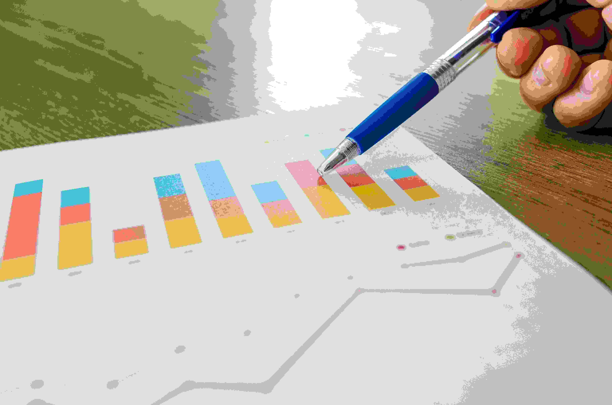

How to Use a Loan Calculator Effectively in Kenya

Taking out a loan in Kenya can either boost your financial well-being or burden you with avoidable debt—depending on how well you plan. Whether you're applying for a mobile loan, SACCO financing, or bank credit, using a loan calculator is a powerful step in making informed financial decisions.
What Is a Loan Calculator and Why You Need It in Kenya
A loan calculator is an online tool that allows borrowers to estimate critical financial metrics before committing to a loan. These include:
- Monthly repayment amounts based on the principal, term, and interest rate
- Total interest paid over the life of the loan
- Overall cost of borrowing, including fees where applicable
In Kenya, where options like M-Shwari, KCB M-Pesa, Tala, Branch, and SACCOs offer varying loan terms and interest rates, a calculator gives you clarity. It helps you avoid predatory rates and ensures you borrow within your means.
Step-by-Step: How to Use a Loan Calculator in Kenya
- Enter the loan amount (e.g., KES 5,000 to KES 500,000)
- Select a repayment duration (e.g., 1 month to 24 months)
- Input the interest rate (monthly or annual, depending on the lender)
- Click "Calculate" to get instant repayment details
These calculations help answer key questions like: "Can I afford this loan based on my income?" and "Which lender is offering the lowest total cost?"—which are critical for avoiding debt traps.
Visualizing the True Cost of Loans in Kenya
The chart above illustrates how total loan repayments differ across common lenders in Kenya. For example, a 10% monthly interest loan can cost significantly more over six months than a 2% SACCO loan. These visuals help you make side-by-side comparisons that are often hidden in loan terms.
Top Mistakes to Avoid When Using a Loan Calculator
- ❌ Ignoring hidden charges such as processing fees, late penalties, or loan insurance
- ❌ Using outdated or incorrect interest rate figures
- ❌ Overestimating your repayment capacity without factoring in your net income and expenses
Why It Pays to Use a Loan Calculator First
Loan calculators empower Kenyan borrowers with foresight and control. You can:
- Compare multiple lenders based on cost
- Plan your monthly cash flow and avoid surprises
- Prevent overborrowing and late payments
Ultimately, using a loan calculator promotes financial literacy and debt management discipline, helping you avoid common pitfalls that many Kenyan borrowers face.
Try Our Free Loan Calculator Now